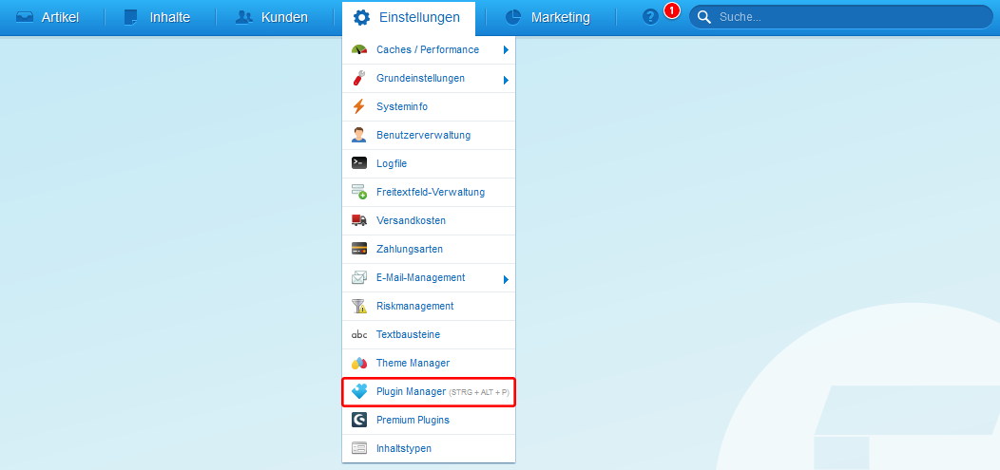
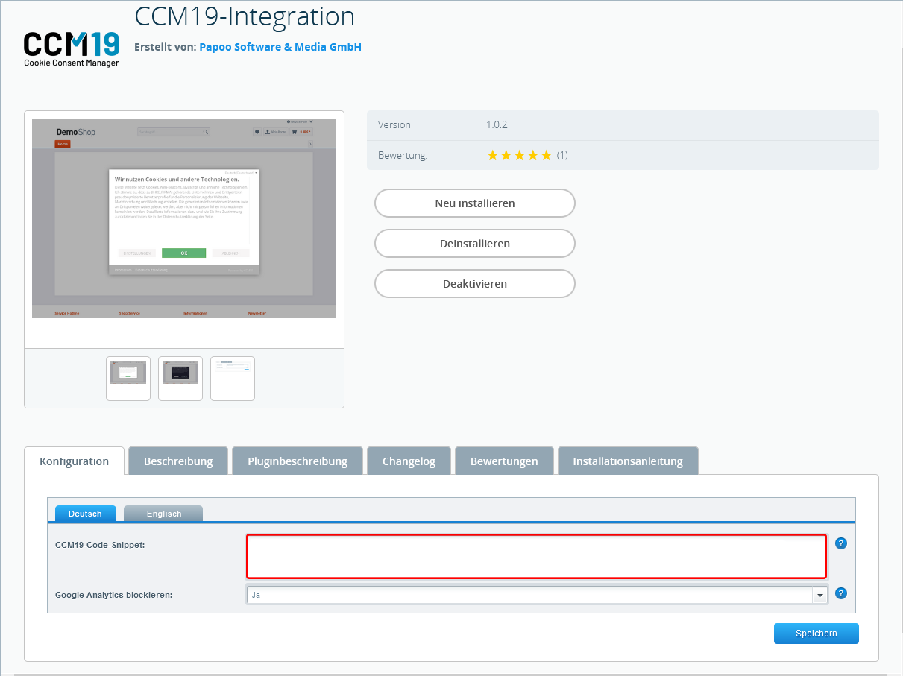
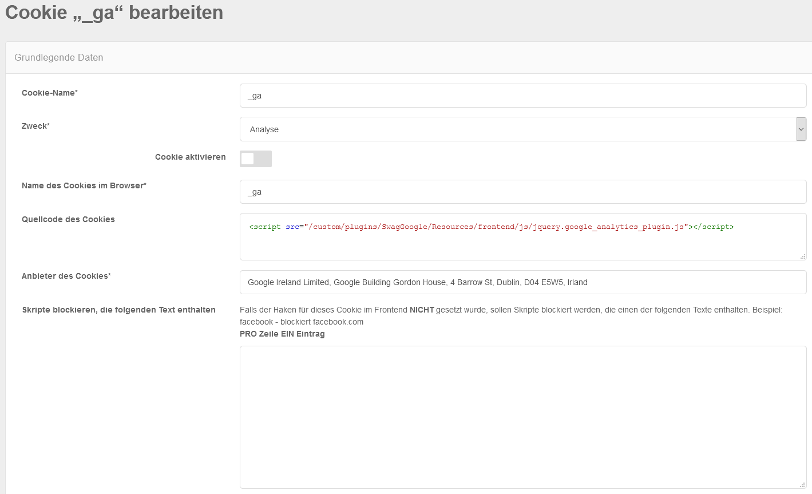

Nach der erfolgreichen Installation von CCM19 auf Ihrem Server bzw. der Einrichtung bekommen Sie einen Javascript-Code im Dashboard von CCM19 (hier unten im Screenshot zu sehen).
Danach wechseln Sie zu Ihrer Shopware Installation. Dort gehen Sie im oberen Menü auf den Punkt Einstellungen und dann auf Plugin Manager. Dort suchen Sie nach dem Plugin CCM19-Interation und installieren dieses in Ihrer Shopware-Instanz.

Ist die Installation abgeschlossen können Sie das CCM19 Code-Snippet in das dafür vorgesehene Feld einfügen. Bitte beachten Sie, dass der Punkt "Google Analytics blockieren" aktiv geschaltet sein sollte.

Gehen Sie anschließend in CCM19 zurück. Rufen Sie den Cookie _ga auf und fügen Sie folgende Zeile in den Quellcode des Cookies ein:
<script src="/custom/plugins/SwagGoogle/Resources/frontend/js/jquery.google_analytics_plugin.js"></script>

Damit ist die Einrichtung abgeschlossen und CCM19 sollte nun in Ihrem Shop aktiv sein.